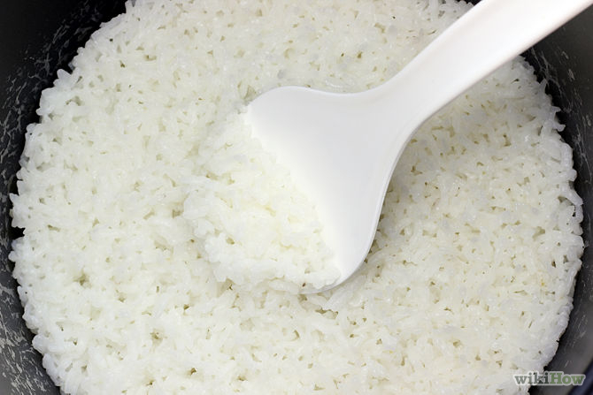
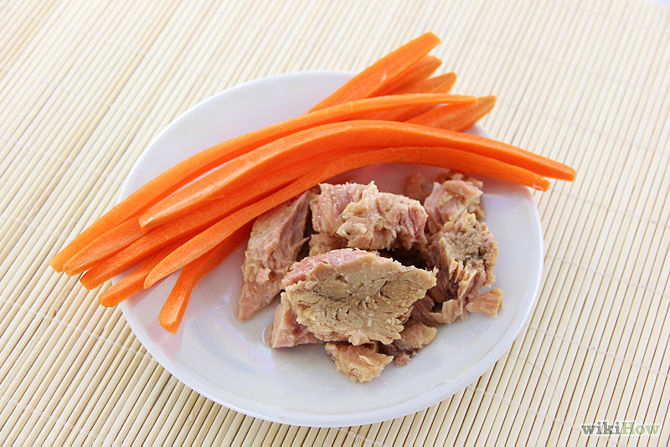
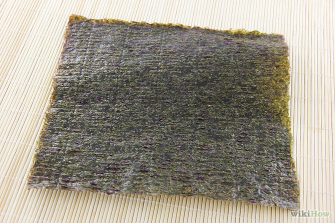
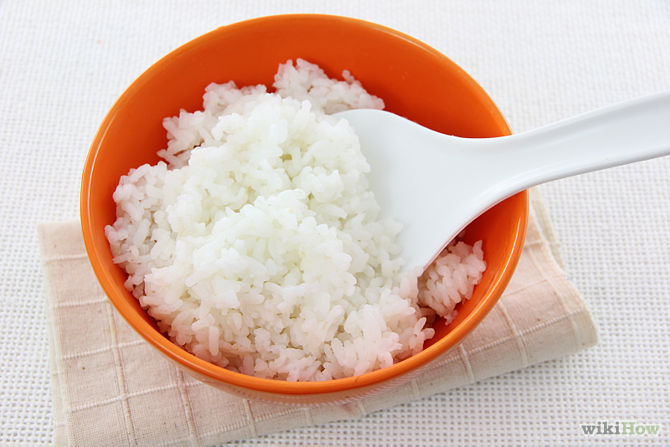

Cook your rice in your rice cooker. Most packages of nori have instructions for seasoning.
Chop and prepare your vegetables and fish.
Put the nori on the bamboo mat shiny side down.
Remove the rice from the rice cooker and put it into a bowl.
Add seasoned rice vinegar to moisten the rice (but not too wet).